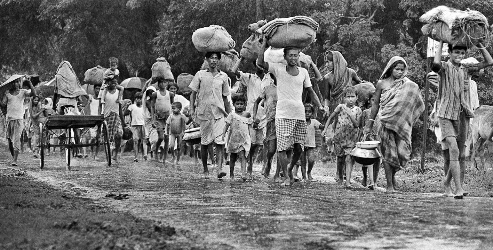

Libeartion War 1971
The Bangladesh Liberation War (1971) was a nine-month armed conflict where East Pakistan fought for independence from West Pakistan, resulting in the birth of Bangladesh. Sparked by political marginalization and brutal military action ("Operation Searchlight") starting March 25, 1971, the war saw Bengali fighters (Mukti Bahini) and India defeat Pakistan, ending December 16, 1971

History
Causes of the war
Bangladesh's Independence Day is celebrated on March 26, commemorating the declaration of independence by Bangabandhu Sheikh Mujibur Rahman in the early hours of March 26, 1971, immediately following the Pakistani army's brutal crackdown on March 25, known as Operation Searchlight. This declaration marked the start of the nine-month Liberation War that led to the country’s independence on December 16, 1971.

Motiur Rahman
Bir Sreshtho Matiur Rahman (1941–1971) was a Flight Lieutenant in the Pakistan Air Force and a, heroic fighter in the Bangladesh Liberation War. He is one of only seven freedom fighters to be awarded Bangladesh's highest military gallantry award, Bir Sreshtho (The Most Valiant Hero), for his supreme sacrifice.

Munshi Abdour Rouf
Munshi Abdur Rouf (1943–1971) was a Lance Nayek in the East Pakistan Rifles (EPR) and one of the seven recipients of Bangladesh's highest military honor, Bir Sreshtho. He died on April 8, 1971, in the Chittagong Hill Tracts while bravely fighting the Pakistani Army, allowing his platoon to retreat, and was posthumously awarded for his immense bravery during the 1971 Liberation War.

Ruhul Amin
Bir Sreshtho Mohammad Ruhul Amin (1935–1971) was a valiant Engine Room Artificer in the Bangladesh Navy and one of the seven recipients of Bangladesh's highest military gallantry award, Bir Sreshtho